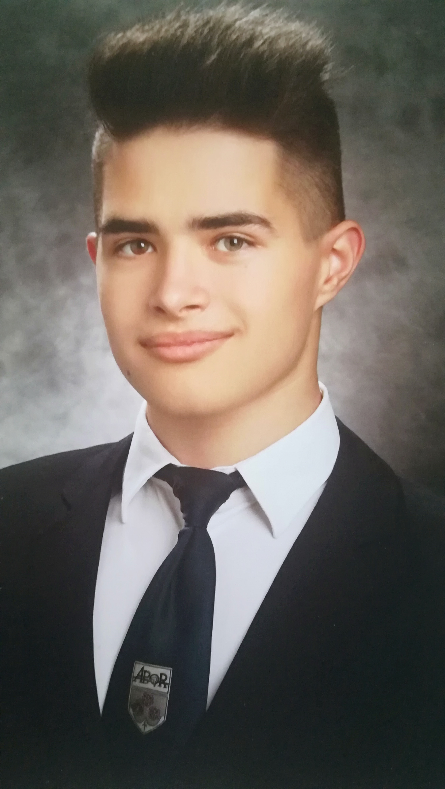

Czigány Richárd vagyok, jelenleg a Budapesti Műszaki és Gazdasági Egyetem Gépészmérnöki Karának elsőéves hallgatója. Az egyetemi tanulmányaim megkezdése előtt Győrben, az Apor Vilmos Római Katolikus Általános Iskola és Gimnázium tanulója voltam, valamint az ottani Alapfokú Művészeti Iskolában is eltöltöttem 10 évet. De már ott töltött éveim alatt is felkeltette az érdeklődésemet a különböző anyagok megmunkálása, valamint az informatika, áramkörök és programozás is. De ezen kívül az autók működése és szerelése is foglalkoztat.